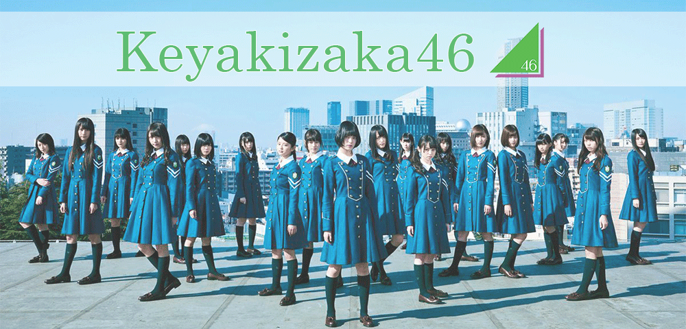

|
 |
 |
ประวัติ Keyakizaka46
ถ้าพูดถึง “ไอดอล (Idol)” หลายๆคนคงจะนึกถึง สาวๆในชุดน่ารัก หรือ บิกินี่ ที่มาพร้อมความน่ารักสดใส และความแบ๊วขั้นสุด ซึ่งเป็นอย่างนั้นจริงๆเราก็จะไม่เถียง ฮาๆ
แต่ก็มีหลายคนเหมือนกันที่เริ่มเบื่อความซ้ำซากจำเจของวงการไอดอลที่ส่วนใหญ่จะมารูปแบบเดียวกัน
เพราะฉะนั้นวันนี้
เลยขอภูมิใจนำเสนอ “Keyakizaka46” ผู้ที่จะมาฉีกกฎเกณฑ์แห่งวงการไอดอลญี่ปุ่น

Keyakizaka 46 เริ่มขึ้นในปี 2015 เป็นวงน้องสาวของ Nogizaka46 ที่โด่งดัง ผู้ก่อตั้งไอดอลกรุ๊ปนี้คือ อาจารย์ อากิโมโตะ ยาสุชิ หรือรู้จักกันในฐานะผู้ก่อตั้ง AKB48 สมาชิกรุ่นแรกเปิดตัวเมื่อวันที่ 21 สิงหาคม 2558
เดบิวท์ซิงเกิลของสาวๆ Keyakizaka 46 ถูกปล่อยออกมาในวันที่ 6 เมษายน 2559 กับชื่อเพลงที่ช่างติดหู Silent Majority ยอดขายในสัปดาห์แรกทำลายสถิต สูงสุดในประวัติศาสตร์ ของ ซิงเกิลเดบิวท์ นักร้องหญิง ของ Oricon Chart ที่ 262,000 แผ่น ไม่ธรรมดาจริงๆ

ซิงเกิ้ลเปิดตัวที่ขนความเท่ กล้าที่จะแตกต่าง ด้วยเครื่องแบบแนวทหาร เนื้อหาเพลงที่ดุดัน เสียดสีสังคม ทำให้เพลงนี้ถูกพูดถึงกันอย่างมากในญี่ปุ่น